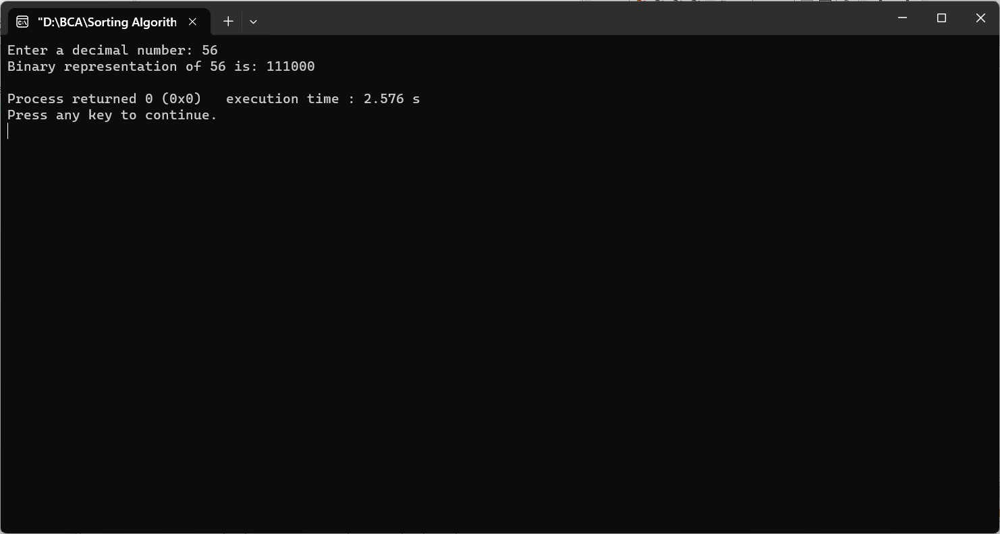

CONVERT A NUMBER INTO BINARY USING RECURSION
#include
void decimalToBinary(int n) {
if (n > 0) {
decimalToBinary(n / 2);
printf("%d", n % 2);
}
}
int main() {
int decimalNumber;
printf("Enter a decimal number: ");
scanf("%d", &decimalNumber);
if (decimalNumber < 0) {
printf("Please enter a non-negative number.\n");
} else if (decimalNumber == 0) {
printf("Binary representation of 0 is 0\n");
} else {
printf("Binary representation of %d is: ", decimalNumber);
decimalToBinary(decimalNumber);
printf("\n");
}
return 0;
}
